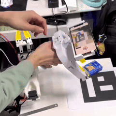
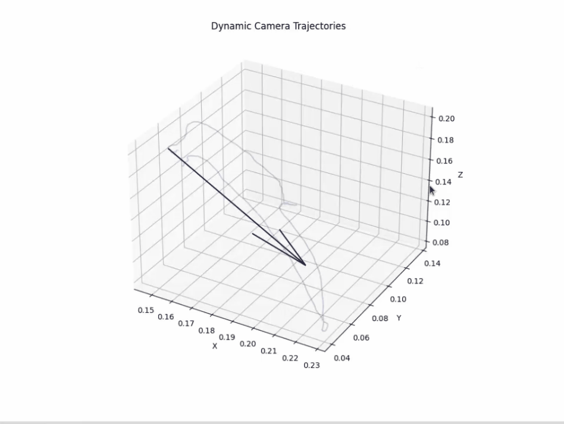
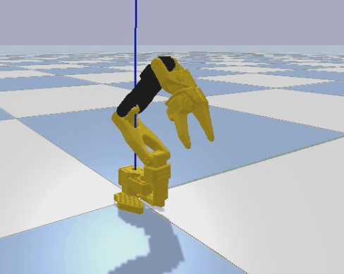
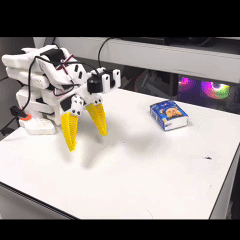

1
数据采集设备与介绍

本项目聚焦异构映射与数据采集。我们展示两类从人手动作到 SO101 机械臂动作的映射流程，覆盖采集设备、位姿估计、坐标变换、仿真验证、真机验证以及 LeRobot 可视化视频结果。
通过 UMI 夹抓与 iPhone Pro 获取操作数据，进行异构对齐后，将动作和位姿信息映射到 SO101 机械臂执行链路。





胸口相机支架上的 iPhone Pro 采集手部视频，先进行手部关键点识别，再通过一系列位姿和坐标计算映射到 SO101 机械臂。